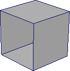
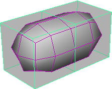

“细分曲面代理”(Subdiv Proxy)可用于在修改原始网格的同时预览多边形网格的平滑版本。原始网格显示为部分透明，以便您可以查看下方的平滑版本。启用“细分曲面代理”(Subdiv Proxy)的“镜像行为”(Mirror Behavior)选项后，在您修改多边形网格原始的那一半时，另外一半会同时更新。
使用“细分曲面代理”(Subdiv Proxy)对多边形网格进行对称建模
- 选择多边形网格。

- 选择“网格 > 平滑代理 > 细分曲面代理”(Mesh > Smooth Proxy > Subdiv Prox) >
 。
。
- 在“细分曲面代理选项”窗口中，将“镜像行为”(Mirror Behavior)设置为“完全”(Full)，设置“镜像方向”(Mirror Direction)，然后单击“平滑”(Smooth)。
原始网格将沿“镜像方向”(Mirror Direction)镜像。
 - 修改细分曲面代理的其中一半（例如，使用“编辑网格 > 挤出”(Edit Mesh > Extrude)）。
所做的修改会自动更新到细分曲面代理的另外一半。
- 如果要合并这两部分，请选择“网格 > 平滑代理 > 移除细分曲面代理镜像”(Mesh > Smooth Proxy > Remove Subdiv Proxy Mirror)。

使用“细分曲面代理”(Subdiv Proxy)镜像多边形网格的注意事项
- 镜像仅适用于世界坐标轴。镜像已任意旋转的对象可能会产生意外的结果；有些几何体可能会因此而重叠。
- 如果在对象空间模式下修改细分曲面代理镜像的那一半，则沿一个方向拖动操纵器将在相反方向上修改代理。
- 如果在世界空间模式下修改细分曲面代理镜像的那一半，则沿一个方向拖动操纵器将在相同方向上修改代理。
- 如果在对象空间或世界空间模式下修改细分曲面代理原始的那一半，则沿一个方向拖动操纵器将在相同方向上修改代理。
提示：
使用“网格 > 平滑代理 > 细分曲面代理”(Mesh > Smooth Proxy > Subdiv Proxy)（“镜像行为”(Mirror Behavior)设置为“完全”(Full)）创建对称模型后，使用“网格 > 平滑代理 > 移除细分曲面代理镜像”(Mesh > Smooth Proxy > Remove Subdiv Proxy Mirror)可移除平滑网格。然后再次使用“网格 > 平滑代理 > 细分曲面代理”(Mesh > Smooth Proxy > Subdiv Proxy)（在“镜像行为”(Mirror Behavior)设置为“无”(None)的情况下）创建可通过非对称方式设置动画的平滑网格。